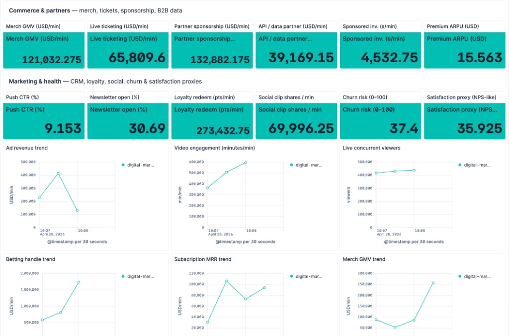
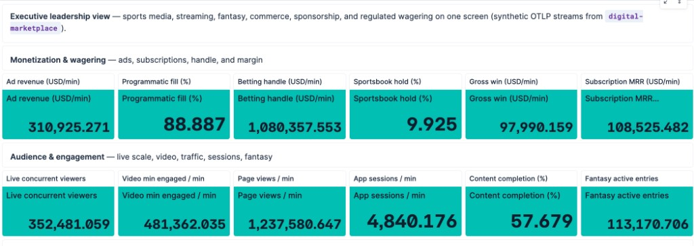

Executive dashboard — business KPIs beside ops telemetry
Same Serverless Observability project: commerce, ticketing, sponsorship, CRM & churn proxies — driven by live business.* OTLP metrics from the demo.

Executive leadership view
Monetization, wagering & audience — from one OTLP stream
Synthetic business.* gauges from the designated emitter service (digital-marketplace in Fanatics) — ad revenue, betting handle, MRR, live viewers, page views, fantasy entries, and more.

Elastic Serverless Observability
By the numbers — why AEs lead with this story
Save · Serverless
$0 Elasticsearch clusters to run
No shard math, version hops, or capacity weekends — teams fund innovation instead of operating search plumbing. Consumption-based pricing aligns spend to real usage.
Enrich · A2A → Security
1 shared Elastic stack
Agent-to-agent handoff into Elastic Security on Serverless is available today — alerts, entities, and TI-style context append to Observability cases without swivel-chair workflows.
Identify · Business KPIs
24+ leadership metrics
Executive dashboard ties OTel business.* gauges to revenue, audience, partner, and churn proxies — same store as RED/USE and traces.
Over time · Efficiency
↓ 30–50% MTTR target*
Automation (ES|QL → workflows → AI → cases) targets dramatically faster restoration vs manual bridge calls — compound savings every quarter as runbooks codify.
* Illustrative range for customer business cases — replace with account-specific ROI from Elastic value assessments; not a guarantee.
Why we're here
Modern systems are too complex to observe manually
📊
Too much data
Thousands of spans, logs, and metrics per second — humans can't keep up during an incident.
⏱️
MTTR is too high
Average incident response takes 30+ minutes. Most of that time is data gathering, not fixing.
💵
Business blind spots
Engineering sees latency curves while revenue, audience, and partner KPIs live in another silo — until something breaks loudly.
🔗
Cross-cloud complexity
A single fault can cascade across AWS, GCP, and Azure — making root cause invisible to any one team.
🤖
The answer: autonomy
AI agents that detect, investigate, and remediate — closing the loop without waking anyone up at 3am.
Your lab environment
Fanatics Collectibles — Live Demo Platform
9 simulated microservices across three clouds, emitting real OpenTelemetry signals — plus synthetic business KPIs (audience, monetization, partners, retention proxies) on the Executive dashboard.
Open Dashboards → Executive for revenue-style leadership metrics and Systems Operations for RED/USE + traces — same incident, two lenses.
Workshop structure
Three labs, ~45 minutes
1
Connect to Elastic Cloud & Deploy Your Elastic Cloud Serverless project is pre-provisioned. Explore the deployed scenario — 9 microservices, 4 AI workflows, 21 SLOs, and 20 alert rules — all created automatically.
2
Explore Telemetry with ES|QL Query live logs and metrics with ES|QL; explore Executive business KPIs alongside APM, infrastructure, and SLO views.
3
Inject a Fault & Watch Elastic Detect It Pick a fault channel, inject it, and watch ES|QL alert rules fire. Cases and workflows increasingly frame revenue / audience impact alongside technical RCA — the north star for prioritization.
Lab 1
Connect to Elastic Cloud & Deploy
Everything is provisioned automatically when the lab starts. Your job is to explore what was built.
🖥️ Demo App
Scenario selector, deployment status, Kibana dashboard shortcuts, and Chaos (fault injection) from the active deployment — all in one place.
☁️ Elastic Serverless
Your Kibana instance — pre-logged in, pre-configured with all resources.
Open Dashboards → Executive (business KPIs) and Systems Operations (service health)
Navigate to Applications → Service Inventory (7 services)
Slice logs and metrics* in Discover — correlate error spikes with KPI trends.
🗺️ APM Service Map
Distributed traces across services and clouds.
🏗️ Infrastructure
Simulated hosts (AWS, GCP, Azure) with CPU, memory, disk metrics.
Lab 3
Inject a Fault & Watch Elastic Detect It
1
Open the Demo App → Chaos On your running deployment, click Chaos. Choose any fault channel (e.g. CH-07: WiFi AP Disconnect Storm), select a fault mode, and click Inject Fault.
2
Watch the error spike appear in ES|QL Run the error spike query in Discover. Within 30–60 seconds an ES|QL alert rule fires and the AI workflow triggers.
3
Observe the AI agent in Workflows Navigate to Observability → Workflows. Watch the execution run. Click View Full Conversation to see the AI agent's reasoning.
4
Review the auto-created Case Navigate to Observability → Cases. The workflow opens a case with RCA and remediation narrative — we're evolving toward explicit revenue / KPI exposure in case descriptions so responders prioritize what hurts the business, not only error counts.
Under the hood
The Autonomous Observability Loop
⚡
Fault Injected
Demo App → Chaos
▶
📋
Logs Flow
OpenTelemetry → ES
▶
🚨
Alert Fires
ES|QL Rule · 30s
▶
🔄
Workflow Runs
Workflows
▶
🤖
AI Investigates
AI Agent + Tools
▶
✅
Case Closed
RCA + biz metrics context
ES|QL Alert Rules
20 rules running on 30-second schedules. Each monitors a specific fault pattern — log keywords, error rate spikes, latency anomalies.
AI Agent Tools
The agent pulls ES|QL, SLO status, APM traces, and cases — with room to layer business KPI signals into prioritization as workflows evolve.
Completing the loop
Revenue-aware cases & Security handoff
We are tightening the loop between technical RCA, business KPIs (Executive metrics, estimated revenue / audience exposure in case text), and security-relevant context — agent-to-agent handoff into Elastic Security on Serverless is available today.
Cases with revenue language
Workflows and case templates will increasingly summarize which KPIs move when a service degrades, so responders align fixes with money and trust — not only CPU graphs.
Elastic Security (agent-to-agent)
Available today: agent-to-agent handoff into Elastic Security on Serverless enriches Observability cases with alerts, entities, and TI-style context — without swivel-chair workflows. The lab adds synthetic Security narrative on each case to demo the full loop end-to-end.
What powers this
Key Elastic Technologies
📝
ES|QL
Next-generation piped query language. Powers alert rules, dashboards, and real-time analysis. No index patterns required.
🔄
Workflows
Trigger AI agents from alerts. Define multi-step automated response — investigate, notify, remediate, and close cases.
🎯
SLOs
21 auto-generated SLOs — availability, error rate, and latency targets per service. Burn rate alerts for early warning.
📡
OpenTelemetry
Industry-standard traces, metrics, and logs — with zero-code auto-instrumentation where libraries support it. Ingest via OTLP; works with any OTLP-compatible collector.
Service Level Objectives
21 Auto-Generated SLOs
Three SLO types are created automatically per service — giving you a health baseline before any fault is injected.
💚
Availability
Measures the percentage of successful requests per service. Target: 99%+ uptime.
⚠️
Error Rate
Tracks the ratio of error-level log events. Fires when error ratio exceeds threshold.
⏱️
Latency
P95 response time target. Detects performance degradation before users notice.
Tip: Navigate to Observability → SLOs and set the time range to Last 15 minutes to see live burn rates from the running scenario.
Ready to begin
Start the Workshop
1
Go to play.instruqt.com Search for Elastic Autonomous Observability
2
Start the track Elastic Cloud project auto-provisions in 3–4 minutes
3
Follow the instructions panel Each lab has step-by-step guidance — use the tabs to navigate